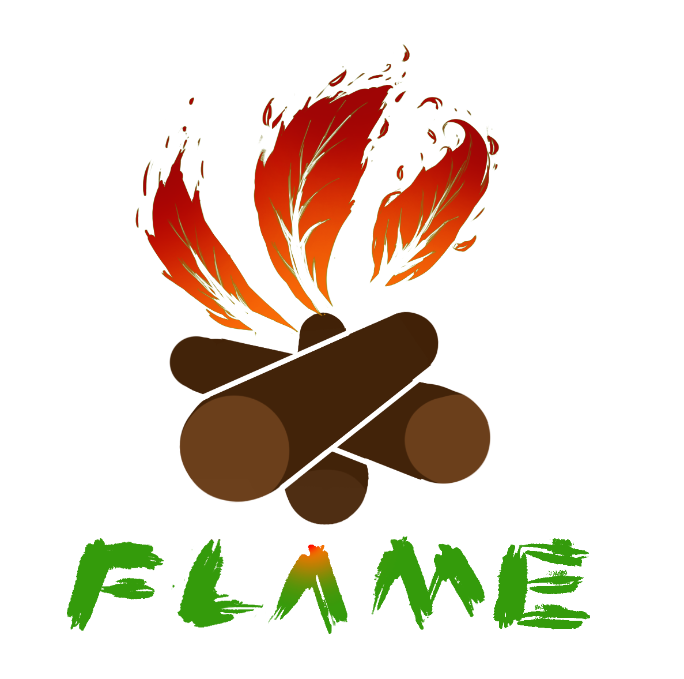
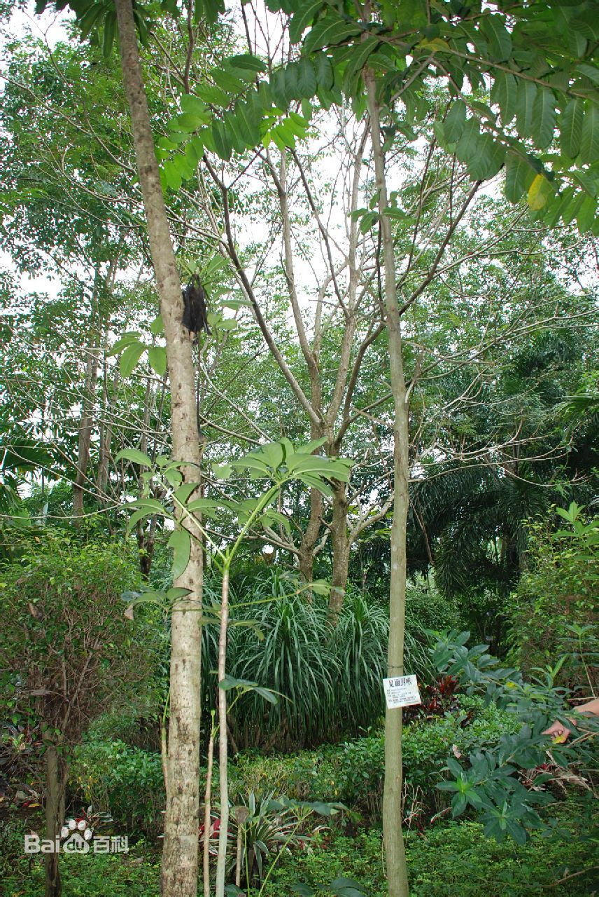
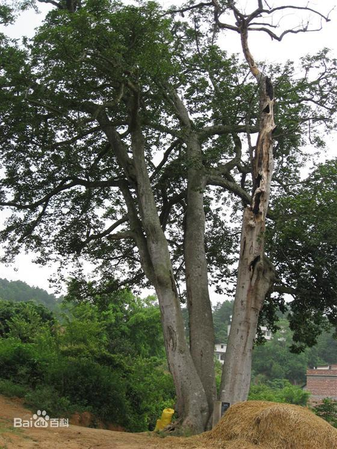
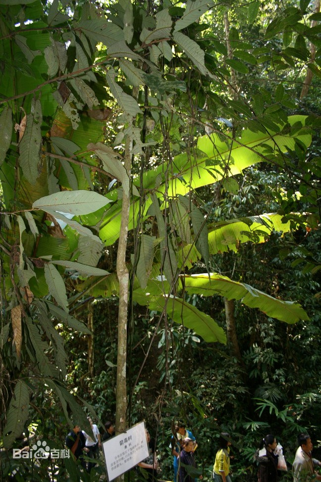
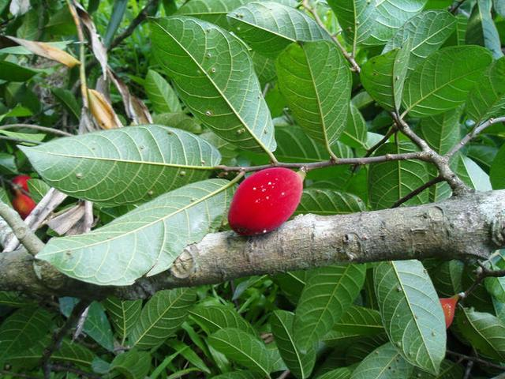
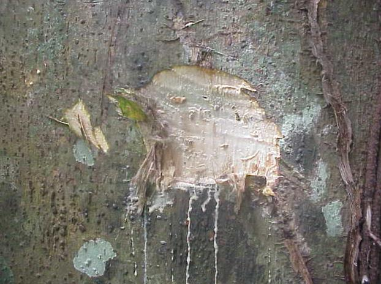
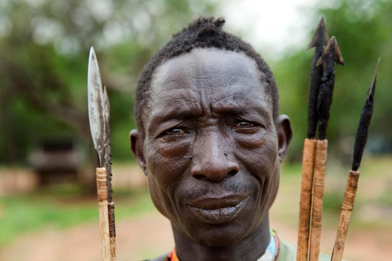
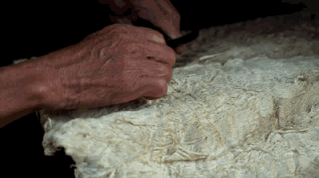

箭毒木



见血封喉（学名：Antiaris toxicaria Lesch.），又名箭毒木，多生于海拔1500米以下的雨林中，乔木，高25-40米，胸径30-40厘米；具乳白色树液，树皮灰色，春季开花。是一种剧毒植物和药用植物。箭毒木的乳白色汁液含有剧毒，一经接触人畜伤口，即可使中毒者心脏麻痹（心率失常导致），血管封闭，血液凝固，以至窒息死亡，所以人们称它为“见血封喉”。
在我们国家，见血封喉是三级保护植物，分布于广东（雷州半岛）、海南、广西、云南南部。斯里兰卡、印度（包括安达曼群岛）、缅甸、泰国、中南半岛、马来西亚、印度尼西亚。

若仔细观察，就会发现，你的身边可能就有一棵这样的树木。
乍一看，和一般的树木没什么区别，每年春季开花，夏季结果，果子成熟后呈紫黑色，和一般的小野果长得也很像，但这种果子是不能食用的，含有毒性，味道也很苦涩，并没有一般浆果的酸甜感。
见血封喉毒性最强的是树皮的乳白色汁液，汁液里含有多种有毒强心苷和苷元，当这些毒素一旦进入血液，会导致血液凝固，心脏麻痹，最终窒息死亡，所以才有了见血封喉的名字。
由于树木毒性很强，大部分见血封喉树都是被保护起来的，不允许随意砍伐，就连触摸都是要再三小心。

毒性再强，也能物尽其用
1、武器；
自从傣族猎人发现树枝有毒后，西双版纳的猎人们就会将见血封喉树的汁液，涂在箭、飞镖和吹镖上，用来制作武器狩猎。
值得一提的是，被这种毒液毒死的动物，原则上是可以食用的，因为这种毒素在消化道内没什么作用，在血液中效果明显。
在美洲的印第安人，也会利用这种毒素制作毒箭。在1859年，和英军交战的过程中使用了这种武器，也让侵略者尝到了“见血封喉”的滋味。

2、中药
见血封喉是一种毒药也是一种中药，它的汁液和种子，均可入药。药量得当，有强心和催吐的功能。
尤其是其中的强心苷，常用作于强心药物，用来治疗心脏功能不全等疾病。

3、树皮做衣服
云南西双版纳的少数民族经常会用见血封喉的树皮制作衣服和床垫。
见血封喉树皮很厚，纤维细长柔软。树皮剥下后，在水中浸泡一个月去除毒性，再经过反复捶打冲洗，就能得到柔软保暖的材料，可用来制作衣服和褥垫。